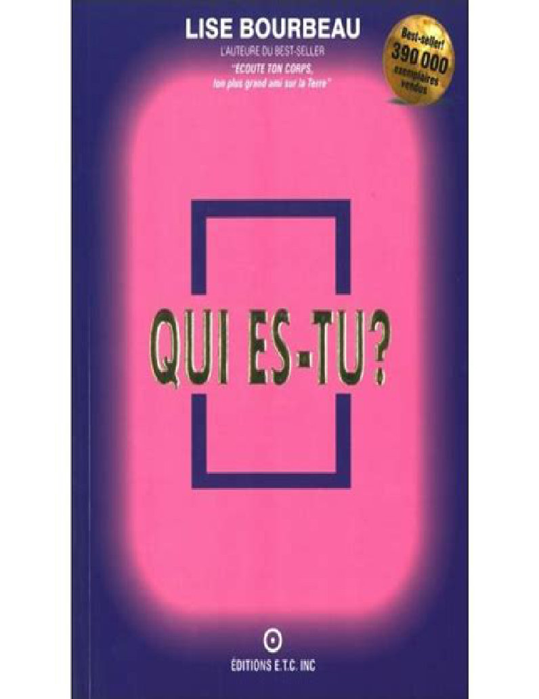

savoirs · Développement personnel
Le livre en quelques mots
Lise Bourbeau propose une lecture symbolique de la personnalité à travers les perceptions, le langage, les émotions, les habitudes et le corps. Le livre invite à s’observer et à s’accepter dans un cadre spirituel propre à l’autrice. Les interprétations psychologiques et médicales développées ne constituent pas des connaissances scientifiques validées.
Version locale, PDF fourni par l’utilisateur. Aucun accès public Netlify n’est activé.
✦ Les chapitres · 12 synthèses documentaires
Chaque synthèse reformule une idée ou une section identifiable du PDF ; les liens ouvrent la page correspondante. Les arguments spirituels ou psychologiques sont présentés comme ceux de l’auteur.
01Tu es une âme en évolution
Lise Bourbeau expose sa conception spirituelle d’une existence conçue comme apprentissage. Elle invite à examiner la responsabilité personnelle et l’acceptation de soi ; ses références au karma relèvent de ses croyances.
Lire le passage dans le PDF · p. 5 ↗
02Tu es ce que tu vois
Le chapitre utilise la métaphore du miroir : ce qui attire ou irrite chez autrui pourrait servir d’indice pour réfléchir à soi. Cette lecture symbolique n’établit pas une causalité objective entre les personnes.
Lire le passage dans le PDF · p. 16 ↗
03Tu es ce que tu entends
L’autrice examine les réactions aux paroles, aux critiques et à l’autorité. Elle encourage à écouter ce que ces réactions révèlent des besoins ou jugements personnels.
Lire le passage dans le PDF · p. 25 ↗
04Tu es ce que tu dis
Les formulations habituelles et les réactions verbales sont présentées comme des signes de croyances internes. Bourbeau invite à observer son langage pour mieux identifier ses positions.
Lire le passage dans le PDF · p. 33 ↗
05Tu es ce que tu penses
L’autrice insiste sur les pensées récurrentes et leur influence présumée sur la perception et les comportements. Elle propose de remplacer l’autocritique par une attention plus consciente.
Lire le passage dans le PDF · p. 46 ↗
06Tu es ce que tu ressens
Le chapitre invite à reconnaître les émotions plutôt qu’à les refouler. Il décrit les ressentis comme des informations sur les besoins et les situations vécues.
Lire le passage dans le PDF · p. 57 ↗
07Tu es ce que tu manges
Bourbeau interprète les préférences et les habitudes alimentaires comme des indices symboliques du rapport à soi. Ces liens relèvent de son cadre de développement personnel.
Lire le passage dans le PDF · p. 61 ↗
08Tu es ce que tu portes
Les choix vestimentaires deviennent un support pour interroger la liberté personnelle et l’influence du regard des autres. L’autrice propose d’observer ses habitudes sans les considérer comme de simples contraintes extérieures.
Lire le passage dans le PDF · p. 69 ↗
09Tu es ta demeure
Le chapitre associe les espaces de vie aux habitudes, aux besoins et à la façon d’organiser son quotidien. Il s’agit d’une grille symbolique de réflexion, pas d’un diagnostic de personnalité.
Lire le passage dans le PDF · p. 76 ↗
10Tu es la forme de ton corps
L’autrice développe des interprétations de la morphologie et de la posture. Ces associations ne constituent pas des indicateurs médicaux ou psychologiques validés.
Lire le passage dans le PDF · p. 83 ↗
11Tu es tes malaises et maladies
Bourbeau attribue diverses affections à des conflits émotionnels ou spirituels. Ces affirmations ne sont pas médicalement établies et ne doivent jamais servir à expliquer une maladie ni retarder une consultation.
Lire le passage dans le PDF · p. 112 ↗
12Conclusion et cheminement personnel
La fin de l’ouvrage invite à faire le bilan de ses observations et à poursuivre une réflexion sur ses croyances. L’accent porte sur la liberté de choisir sa réponse aux événements.
Lire le passage dans le PDF · p. 205 ↗